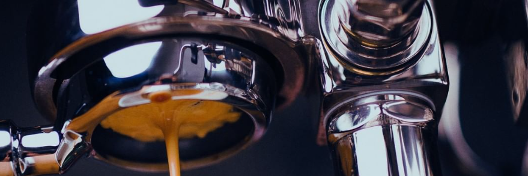
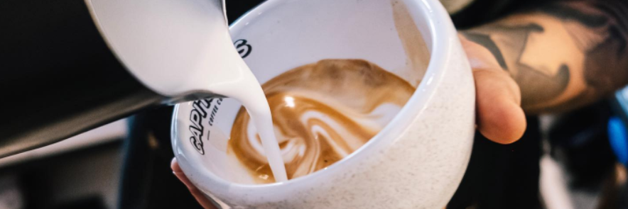

CAFE BUENO
¿Por qué es bueno tomar café? Disfrutar esta bebida, ayuda a mejorar tu concentracion a lo largo del dia. Disminuye el dolor de cabeza y ademas reduce el riesgo de enfermedades cardiovasculares y neurologicas. Se ha comprobado que el café mejora el intelecto, el tiempo de reaccion, la atencion, el razonamiento logico, la mayoria de las funciones complejas que se asocian con la inteligencia.
Somos tostadores de café de la mejor calidad, nuestro objetivo es sacar las mejores cualidades de cada grano, cuidando que cada proceso se realize a la perfección, desde el momento en que el fruto de café es cosechado hasta que es servido en una taza. Siempre llevandolo a la pu erta de tu casa.
Cuidamos cada paso del proceso para que el resultado sea el mejor.